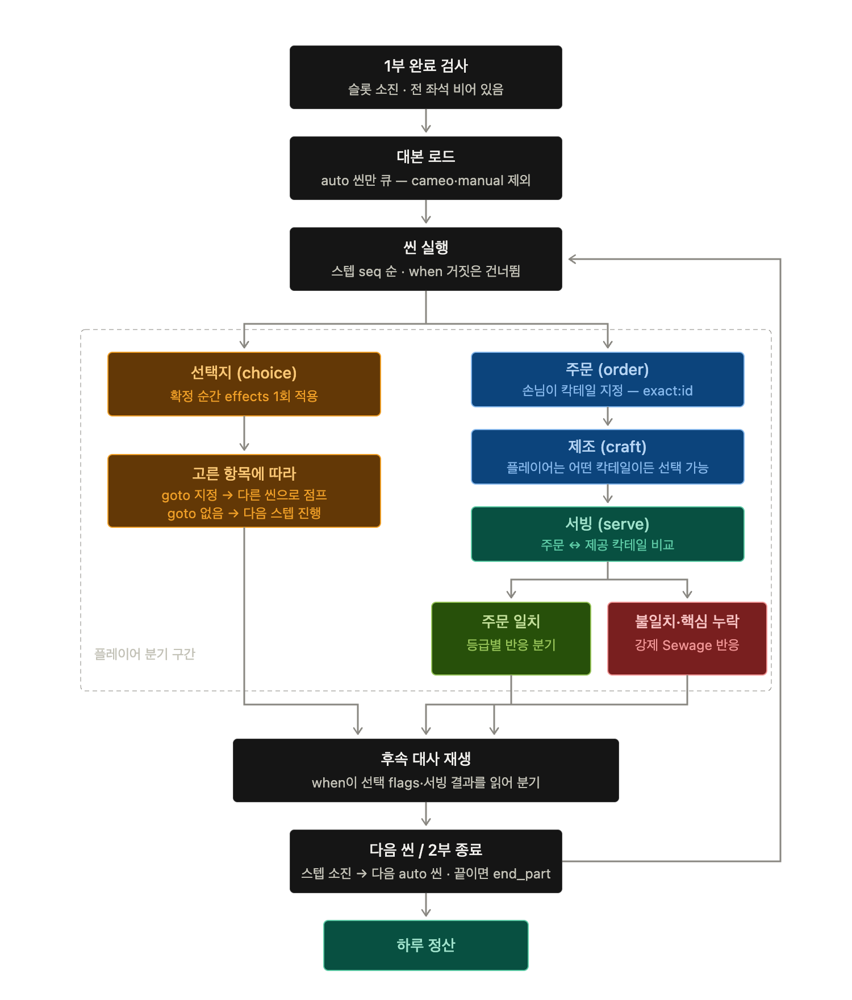

2부 운영 시스템 구현 명세
| 이준서 | |
| 시스템 | |
| 진행 중 | |
문서 성격프로그래머와 테크니컬 기획자를 위한 2부 운영 시스템 구현 명세다. 1부 종료 이후 단골 손님 대본을 재생하고, 선택지·주문·제조·서빙·결과 반영을 거쳐 2부 종료 시 일일 매출 정산으로 넘어가는 전체 흐름을 정의한다.
현재 구현 기준데모는 Day 0·1·2·3의 4일 구조를 사용한다. 2부 본편의 정본 데이터는 별도 시퀀스 파일이 아니라
script/bar/dayN.json → phase: "bar"이며, 런타임은 이 대본의 씬과 스텝을 순서대로 실행한다.
1. 시스템 목적
목적2부 운영 시스템의 목적은 단골 손님과의 스토리 대화를 플레이어의 선택과 칵테일 제조 행동으로 연결하고, 그 결과가 인물 관계·분기·일일 매출 누계·다음 일차에 일관되게 반영되도록 진행을 통제하는 것이다.
- 핵심 역할: 그날의 2부 대본을 로드하고
scene → step순서로 실행한다.
- 해결해야 하는 문제: 대화, 선택지, 캐릭터 등장·퇴장, 주문, 제조 화면, 서빙 결과가 서로 다른 시스템에 걸쳐 있어도 하나의 진행 상태로 이어져야 한다.
- 플레이어에게 보이는 결과: 단골과 대화하고 선택지를 고르며, 직접 칵테일을 만들어 제공한 뒤 그 결과에 따른 대화와 관계 변화를 확인한다.
- 프로그래밍 파트의 구현 범위: 2부 진입·종료, 대본 실행기 연결, 입력 잠금, 주문 문맥 유지, 제조 진입·복귀, 서빙 대상 검증, 결과 전달, 저장 이벤트 전달, 오류 로그.
- 이번 문서에서 제외할 범위: 칵테일 개별 레시피와 점수 산식, 각 기믹 조작, 대사 문안, 캐릭터 리소스 제작, 일일 매출 정산 화면의 그래픽 디자인. 해당 시스템 문서와 데이터가 정본이다.
2. 표기 원칙
데이터 표기 원칙인라인 코드 형식은 유지하되 데이터의 역할에 따라 색상을 구분한다. 빨강은 일반 데이터 표기에 사용하지 않고 오류·금지·빌드 차단 조건에만 사용한다.
| 색상 | 의미 | 표기 예시 |
|---|---|---|
| 파랑 | 런타임 객체·필드·요청 ID | Part2Session.current_scene_id |
| 보라 | 파일 경로·Config·정적 데이터·DSL 필드 | script/bar/day0.json |
| 초록 | 상태·이벤트·신호·전달 흐름 | WAIT_SERVE · OnServeCommitted |
| 노랑 | 추천 필드명·가안·결정 대기 | camera_transition_sec |
| 빨강 | 오류·금지·빌드 차단 조건 | ORDER_CONTEXT_MISSING |
| 상태 표기 | 의미 | 사용 기준 |
|---|---|---|
| 확정 | 현행 데이터와 기존 문서에서 결정된 구현 기준 | 임의 변경 금지 |
| 추천 | 동작은 확정됐지만 코드 이름·내부 구조는 구현자가 바꿀 수 있음 | 동일한 책임과 수명은 유지 |
| 결정 대기 | PD 답변에 따라 동작이 달라지는 항목 | 하드코딩 금지 |
| 보류 | 현재 데모 구현 범위에서 제외 | 관련 로직·데이터 미연결 |
3. 시스템 범위와 경계
| 구분 | 내용 | 담당 시스템 | 상태 |
|---|---|---|---|
| 2부 시작 조건 | 그날 1부 슬롯을 전부 소비했고, 진행 중인 응대·반응이 끝났으며, 세 좌석이 모두 비어 있음 | 바 운영 관리자 → 2부 실행기 | 확정 |
| 2부 운영 중 관리 대상 | 현재 씬·스텝, 등장 인물과 좌석, 선택지, 현재 주문자와 주문 칵테일, 제조 시도 참조, 서빙 결과, 적용된 effects | 2부 실행기 | 확정 |
| 2부 종료 조건 | 그날 마지막 phase: "bar" 씬의 end_part 스텝 실행 | 대본 실행기 → 일차 흐름 관리자 | 확정 |
| 1부에서 전달받는 값 | day, 당일 매출·팁·평판 누계, 글로벌 flags·관계값, 1부 완료 상태 | 바 운영·세이브 | 확정 |
| 다음 구간으로 전달할 값 | 2부에서 변경된 flags·관계값, 서빙 결과·일일 매출 누계, 완료한 씬·선택 기록, end_part 완료 신호 | 일일 매출 정산·일차 흐름·세이브 | 확정 |
| 이번 문서에서 제외 | 제조 기믹 내부 점수 계산, 레시피 데이터, 스프라이트 제작, 대사 작성 | 각 시스템 문서 | 보류 |
경계 원칙2부 운영 시스템은 “무엇을 언제 실행할지”만 결정한다. 대사를 직접 그리지 않고 대화 시스템에 요청하며, 칵테일을 직접 계산하지 않고 제조·판정 시스템의 결과를 받는다. 단, 현재 주문자·진행 위치·외부 요청의 완료 여부는 2부 세션이 소유한다.
3.1 regular_slots.json과 2부 데이터 구분
| 데이터 | 용도 | 2부 본편 사용 여부 |
|---|---|---|
random_waves.json | 1부 일반 손님 스케줄 | 직접 사용하지 않음. 1부 종료 판정에만 간접 사용 |
regular_slots.json | 1부에 섞여 등장하는 단골 카메오 스케줄·cameo_scene 연결 | 2부 본편 시퀀스로 사용하지 않음 |
script/bar/dayN.json | 개점 대화, 1부 카메오 씬, 2부 단골 대화·주문·제조·서빙·종료 | 2부 본편 정본 |
4. 전체 운영 흐름
{kind=link}

처리 흐름1부 완료 검사 → 그날 바 대본 로드 → 실행 가능한
phase: "bar"자동 씬 선택 → 씬의 스텝 실행 → 대화·선택지·주문·제조·서빙 처리 → 결과와 effects 확정 → 다음 씬 →end_part→ 일일 매출 정산
정산 표시 규칙각
serve에서는 가격·팁·등급에 따른 매출값만 내부 누계하고 별도의 잔별 정산 팝업을 표시하지 않는다. 2부의end_part가 끝난 뒤 당일 누계를 모은 일일 매출 정산을 한 번만 표시한다. 이와 별개의 “하루 정산” 단계나 화면은 사용하지 않는다.
| 순서 | 단계 | 진입 조건 | 처리 | 출력·다음 상태 |
|---|---|---|---|---|
| 1 | 2부 진입 요청 | 1부 슬롯 소진 + 전 좌석 비어 있음 | 중복 요청을 막고 day를 고정 | LOADING |
| 2 | 대본 로드 | script/bar/day{day}.json 존재 | phase="bar", trigger="auto"인 씬을 seq 그룹 순으로 준비하고 현재 커서의 when을 평가 | 첫 실행 씬 또는 종료·스킵 |
| 3 | 씬 실행 | 실행할 씬 존재 | steps를 seq 순으로 실행. 스텝의 when이 거짓이면 그 스텝만 건너뜀 | 각 스텝별 대기 상태 |
| 4 | 플레이어 행동 | 대사·선택지·제조·서빙 대기 | 허용된 입력만 소비하고 완료 이벤트를 한 번만 수락 | 현재 스텝 완료 |
| 5 | 결과 확정 | 선택 또는 서빙 완료 | effects, 선택 기록, 제조·서빙 참조와 관계·매출 반영값을 원자적으로 반영 | 다음 스텝 |
| 6 | 씬 전환 | 현재 씬의 스텝 소진 | 다음 실행 가능 auto 씬 검사. goto는 지정 manual 씬으로 이동 | 다음 씬 또는 end_part |
| 7 | 2부 종료 | end_part 실행 | 미처리 주문·제조 요청이 없는지 확인하고 완료 신호 발행 | 일일 매출 정산 화면·다음 일차 구간 |
- 자동 씬 큐:
phase="bar"이면서trigger="auto"인 씬만 자동 선택한다. 같은 파일에 있어도cameo·manual·interact씬은 자동 큐에서 제외하고 전용 이벤트나 goto로 호출한다.
- 자동 씬 커서: auto 씬은
seq그룹을 오름차순으로 한 번만 평가한다. 조건이 거짓인 그룹도 평가가 끝나면 커서를 다음 그룹으로 이동하며, 진행 중 플래그가 바뀌어도 이전 그룹을 다시 검사하지 않는다. 커서의 영속 저장과 불러오기 기준은 저장·불러오기 시스템을 따른다.
- 동일 순서 분기: 공용 실행기에서 여러 auto 씬이 같은
day·phase·seq를 공유하면 해당 그룹의when을 모두 평가한다. 참인 씬이 없으면 그룹을 건너뛰고, 하나면 그 씬만 실행한다. 둘 이상이면AUTO_SCENE_AMBIGUOUS로 진행을 차단한다. 현행 빌드는 같은 그룹에 조건이 없는 씬이 섞이는 경우를 차단한다. 동일 조건식 중복 검사는 신설하고, 런타임은 실제 평가 결과의 다중 참을 최종 차단한다. 현재 2부 바 데이터에는 같은 순서를 공유하는 auto 씬이 없다. 공용 실행기의 실사용 예시는script/street.json의d3_samho_death와d3_samho_rescue다. 두 씬은 Day 3commute_out·seq: 2를 공유하고 서로 다른when으로 한 장면만 실행된다.
{ "id": "d3_samho_death", "day": 3, "phase": "commute_out", "seq": 2, "when": "flag.samho_death_route" }
{ "id": "d3_samho_rescue", "day": 3, "phase": "commute_out", "seq": 2, "when": "flag.samho_refused_drink" }
4.1 실행 순서 요약
PART1_COMPLETE
→ PART2_LOADING
→ AUTO_SCENE_SELECT
→ ENTER / SAY / CHOICE
→ ORDER
→ CRAFT
→ WAIT_SERVE
→ SERVE_RESULT
→ SAY / EXIT
→ NEXT_SCENE
→ END_PART
→ DAILY_SALES_SETTLEMENT
4.2 일차별 로딩
| 일차 | 대본 | 현재 역할 |
|---|---|---|
| Day 0 | script/bar/day0.json | 튜토리얼·크리스·포트 제조를 포함한 첫 바 흐름 |
| Day 1 | script/bar/day1.json | 첫 영업과 단골 대화 |
| Day 2 | script/bar/day2.json | 삼호·아일리 중심의 주문과 선택 |
| Day 3 | script/bar/day3.json | 현재 scenes: []. 바 2부를 만들지 않고 거리·집·컷씬의 결과 확인으로 이동 |
5. 진입과 종료 조건
5.1 진입 조건
| 조건 | 확인 데이터 | 충족 시 처리 | 미충족 시 처리 |
|---|---|---|---|
| 그날 1부 슬롯 소진 | random_waves.json·regular_slots.json의 해당 day 행과 런타임 소비 상태 | 좌석 상태 검사 | 1부 유지 |
| 진행 중 응대 없음 | 주문·제조·서빙·반응 상태 | 좌석 상태 검사 | 현재 응대 완료까지 대기 |
| 전 좌석 비어 있음 | seat_actors.L/M/R | OnPart2Started 1회 발행 | 퇴장 연출 종료까지 대기 |
| 그날 바 대본 로드 가능 | script/bar/day{day}.json | phase="bar" 씬 조회 | 필수 영업일이면 진행 차단·오류 로그 |
| 2부 중복 진입 아님 | Part2Session.is_active | 세션 생성 | 두 번째 요청 무시 |
슬롯 0개인 날1부 대상 슬롯이 0개면 “이미 모두 소진됨”으로 판단한다. 별도 특수 분기 없이 좌석이 비어 있는지 확인한 뒤 곧바로 2부 진입 조건을 검사한다.
5.2 종료 조건
| 종료 유형 | 조건 | 완료 시 전달 이벤트 | 전달 대상 | 다음 상태 |
|---|---|---|---|---|
| 정상 종료 | 마지막 바 씬의 end_part 실행, 미처리 주문 없음 | OnPart2Completed | 일일 매출 정산·일차 흐름·저장 시스템 | COMPLETE |
| 바 씬이 없는 날 | phase="bar" 씬 배열이 비어 있음. 현재 Day 3 | OnPart2Skipped | 일차 흐름·저장 시스템 | COMPLETE 후 다음 phase |
| 중단 후 복귀 | 저장 시스템에서 복구 완료 이벤트 수신 | OnPart2Restored | 2부 실행기 | 전달받은 런타임 위치 |
| 필수 데이터 오류 | 대본·참조 ID·종료 신호 누락 | 오류 코드·현재 day·scene·step | 오류 처리·디버그 UI | 진행 차단 |
종료 금지 조건현재 주문이 살아 있거나 제조 시스템이 결과를 반환하지 않았거나 완성 잔이 서빙 대기 중이면
end_part를 수락하지 않는다. 데이터에서는 이런 배열 자체가 빌드 실패가 되어야 한다.
6. 상태 정의
상태명아래 이름은 권장 코드명이다. 프로젝트의 기존 상태명으로 바꿔도 되지만, 각 상태의 책임·허용 입력·전이 조건은 동일하게 유지한다.
| 상태 | 진입 처리 | 플레이어에게 보이는 것 | 허용 입력 | 종료 조건 | 다음 상태 |
|---|---|---|---|---|---|
LOADING | 대본·캐릭터·UI 참조 확인 | 전환 화면 | 일시정지 메뉴만 | 첫 스텝 준비 완료 또는 bar 씬 없음 확인 | PLAYING_STEP 또는 COMPLETE |
PLAYING_STEP | enter·exit·fx·sfx·timeline·effect 등 자동 스텝 실행 | 해당 연출 | 스킵 허용 씬만 스킵 | 완료 이벤트 | 다음 스텝 상태 |
DIALOGUE_TYPING | 현재 언어 본문을 타이핑한다. 손님 발화일 때만 입 파츠를 재생한다. | 이름표·본문·손님 표정. 루나는 이름과 본문만 표시 | 진행 입력 | 타이핑 완료 또는 즉시 출력 | WAIT_ADVANCE |
WAIT_ADVANCE | 진행 아이콘 표시 | 완성된 대사 | 진행 입력 | 입력 1회 | 다음 스텝 |
WAIT_CHOICE | 조건 평가 후 2–4개 선택지 표시 | 활성·비활성 선택지 | 이동·확정 | 유효 선택 확정 | goto 또는 다음 스텝 |
CRAFT | 공용 제조 시스템에 주문 문맥을 전달하고 craft_view_mode를 초기화한다. | active에서는 칵테일 메뉴·제조 화면, suspended_to_bar에서는 행동이 제한된 바 대화 화면 | active에서는 제조 입력·바 화면 복귀, suspended_to_bar에서는 제조 재진입·읽기 전용 패널 열람만 허용 | 완성 결과 참조 반환 | WAIT_SERVE |
WAIT_SERVE | 완성 잔과 직전 order.actor의 자동 코스터 연결 | 바 화면·서빙 가능한 잔 | 잔 드래그 | 직전 order.actor의 제공 영역에 유효 드롭 | RESOLVING_SERVE |
RESOLVING_SERVE | 주문 일치·Sewage·최종 등급·관계·매출 반영값 확정 | 수령·음용·반응 연출 | 연출 완료 전 잠금 | serve 처리 완료 | 다음 대사·스텝 |
TRANSITION | 씬 종료·다음 씬 조회 | 등장·퇴장·화면 전환 | 공용 메뉴만 | 다음 씬 준비 | PLAYING_STEP 또는 COMPLETE |
COMPLETE | 세션 비활성화·완료 이벤트 발행 | completion_mode에 따라 일일 매출 정산 또는 다음 phase 전환 | 없음 | 정산 인계 완료 또는 스킵 인계 완료 | 2부 종료 |
ERROR | 오류 문맥 기록·진행 정지 | 개발 빌드 오류 표시 | 타이틀 복귀·재시도 정책만 | 저장 시스템 또는 수동 복구 | 저장 시스템의 복구 결과 적용 또는 종료 |
7. 입력과 조작 잠금 규칙
| 상황·상태 | 입력 | 처리 | 입력 소비 | 다음 상태 |
|---|---|---|---|---|
| 대사 타이핑 중 | E·Space·Enter·클릭 | 대기 태그를 무시하고 현재 문장을 즉시 모두 표시 | 소비 | WAIT_ADVANCE |
| 대사 출력 완료 | 진행 입력 | 현재 say 완료 | 소비 | 다음 스텝 |
| 선택지 표시 중 | 방향 이동·확정 | 활성 선택지만 선택. 비활성 선택지는 보이되 확정 불가 | 소비 | goto 또는 다음 스텝 |
| 선택지 표시 중 | 일반 진행 입력 | 선택 확정 키와 동일한 경우 현재 포커스 선택지를 확정. 별도 대사 넘김은 하지 않음 | 소비 | WAIT_CHOICE |
| 서빙 드래그 중 | 좌석 전환·패널 중복 입력 | 무시 | 소비 | 현재 상태 유지 |
| 잘못된 손님·드롭 존 밖에 놓음 | 드롭 | 원위치 스냅백. 주문·서빙 상태는 변경하지 않음 | 소비 | 현재 상태 유지 |
| 전환·결과 적용 중 | 반복·연타 입력 | 잠금 토큰이 해제될 때까지 무시 | 소비 | 현재 상태 유지 |
| 이미 읽은 대사 | 읽음 스킵 입력 | 현재 문장을 즉시 출력하고 짧은 간격으로 다음 읽은 say까지 자동 진행 | 소비 | 읽지 않은 대사 또는 행동 스텝에서 자동 정지 |
| 제조 시스템 내부 | 취소·뒤로가기 | 주문과 craft 상태를 유지한 채 바 대화 화면으로 복귀 | 제조 시스템 소비 | CRAFT 유지 |
| 제조 미완료 상태의 바 화면 | 제조하기·읽기 전용 패널·대사 진행·선택·서빙 | 제조 재진입과 매출 현황 등 읽기 전용 패널 열람만 허용. 대사 진행·선택·서빙·다른 손님 상호작용은 차단 | 허용 입력만 소비 | 제조 재진입 또는 CRAFT 유지 |
제조 게이트의 바 화면 복귀
craft완료 전에도 바 대화 화면으로 돌아갈 수 있다. 이 동작은 주문 취소나 스텝 완료가 아니며current_order, 제조 요청과 자동 코스터를 그대로 유지한다. 제조 화면에서는craft_view_mode: "active", 행동이 제한된 바 화면에서는craft_view_mode: "suspended_to_bar"를 사용한다.suspended_to_bar에서는 제조 재진입과 매출 현황 같은 읽기 전용 패널만 허용하고 대사 진행·선택·서빙·다른 손님 상호작용을 차단한다. 제조가 완료되면 이 값을 폐기한다. 앱 종료와 불러오기에서의 처리 기준은 저장·불러오기 시스템을 따른다.
같은 실행 중 제조 화면 재진입의 의미게임을 종료하거나 세이브를 불러온 상황이 아니라, 제조 도중 바 화면으로 잠시 나가 매출 현황 같은 읽기 전용 패널을 확인한 뒤 다시 제조하기를 누르는 경우를 말한다.
확정 동작같은 실행 중에는 기존
CraftAttempt와 완료한 제조 단계·선택한 재료·도구를 메모리에 유지하고, 바 화면에 머무는 동안 전체 제조 타이머를 정지한다. 전체 제조 타이머의 활성 범위는balance.json → config.craft_timer_scope: "manual_input_active_only"를 따른다. 재진입하면 나가기 직전 단계부터 이어서 진행한다. 앱 종료 또는 불러오기에서의 미완료 제조 처리는 저장·불러오기 시스템을 따른다.
- 입력 잠금 시작: enter·exit·씬 전환·외부 화면 로딩·서빙 결과 커밋을 시작한 프레임.
- 입력 잠금 해제: 해당 시스템의 완료 이벤트를 수신하고 다음 상태 UI가 실제로 활성화된 뒤.
- 잠금 중 허용: 일시정지 메뉴와 접근성 메뉴. 스토리 진행 입력은 금지.
- 같은 프레임 중복 입력: 첫 번째 유효 입력만 처리한다. 동일한 완료 이벤트는
request_id또는step_token으로 멱등 처리한다.
- 대사에서 선택지로 전환: 대사를 완료한 입력을 같은 프레임의 선택지 확정에 넘기지 않는다.
WAIT_CHOICEUI와 기본 포커스가 활성화된 뒤 발생한 새 누름 입력만 처리한다.
- 읽음 스킵: 전체 씬 스킵과 별개의 기능이다. 각 대사에 부여한 고정
dialogue_id로 읽은say를 판별한다. 읽지 않은say또는say가 아닌 모든 스텝 앞에서 즉시 멈추며,when=false로 실행되지 않은 대사는 읽음으로 기록하지 않는다.
- 2부 시간 압박: 2부에는 인내심·서빙 대기 타이머가 없으며
WAIT_COASTER상태도 사용하지 않는다. 제조 자체의 전체 제작 시간만 공용 제조 판정에서 사용한다.
8. 주요 시스템 연결
| 연결 시스템 | 호출 시점 | 전달 값 | 반환 값·이벤트 | 실패 시 처리 |
|---|---|---|---|---|
| 대화 시스템 | say·order.text | actor, expression, localized text, text tags | 타이핑 완료·진행 완료 | 화면에 표시해야 하는 필수 text 누락은 진행 차단 |
| 선택지 시스템 | choice | choice_id, 현재 flags·관계값, 현재 언어 | 선택 seq, effects, goto | 선택 가능 항목 0개는 빌드 오류 |
| 캐릭터·좌석 | enter·exit·say | actor, L/M/R, expression | 등장·퇴장 완료 | 없는 actor·표정·중복 좌석은 빌드 오류 |
| 제조 시스템 | craft | CraftSessionContext(day, craft mode, 주문 표시 문맥). 공용 CraftExecutionRequest에는 guest_id·order_id를 넣지 않음 | craft_attempt_id, Selected Cocktail, Actual Craft, prepared_result_id | 실패 시 같은 craft 스텝에서 재시도 |
| 서빙·판정 | 유효 드롭 후 serve | order context, craft result, served actor | order_match, score_status, final_score, final_grade, Sewage 여부 | 결과 누락 시 커밋 금지 |
| 관계·효과 | effects·choice·serve 완료 | actor, grade, tastes, effects DSL | flags·호감도 변경 결과 | DSL 오류는 빌드 차단 |
| 일일 매출 정산 | 각 serve에서 매출값 누계, end_part 뒤 화면 표시 | 가격, 등급, settlement rule, 당일 매출 누계 | 잔별 매출 반영값·일일 매출 합계 | serve 중복 커밋과 정산 화면 중복 진입 방지 |
| 저장 시스템 연결 | 저장 이벤트 발생 시 | 고정 ID와 필요한 런타임 문맥 | 저장 요청·복구 완료 결과 | 상세 계약은 저장 시스템 문서 적용 |
8.1 시스템 책임 분리
| 처리 | 2부 운영 시스템 | 외부 시스템 | 최종 소유 |
|---|---|---|---|
| 진행 상태 결정 | 현재 scene·step·상태와 다음 전이 결정 | 완료 이벤트 제공 | 2부 세션 |
| 대사 출력 | 대사 요청·완료 대기 | 타이핑·이름표·본문·태그 렌더링. 손님 발화 시 표정과 입 파츠를 반영하며, 루나는 이름과 본문만 표시 | 대화 시스템 |
| 주문 문맥 | 직전 order의 actor·cocktail 유지, craft·serve와 연결 | 칵테일 이름·레시피 조회 | 2부 세션 |
| 제조 진입·복귀 | 호출·대기·반환 참조 보관 | 메뉴·기믹·Actual Craft 생성 | 제조 시스템 |
| 최종 판정 | 서빙 시점 호출·결과 수신 | 점수·Sewage·등급 계산 | 판정 시스템 |
| 관계·서사 반영 | 대본 effects와 serve 결과 적용 순서 통제 | flags·호감도 저장 | 글로벌 진행 데이터 |
| 저장 시스템 연결 | 세션·씬·스텝·주문·결과의 고정 ID와 이벤트 전달 | 영속 필드 선정·직렬화·버전·복구 | 저장 시스템 |
8.2 주문·제조·서빙 연결 규칙
필수 규칙
order → craft → serve문맥을 반드시 유지한다.order가 주문자와 정답 칵테일을 만들고 해당 좌석의 자동 코스터 표시를 요청하며,craft가 그 문맥으로 공용 제조 화면을 연다.serve는 직전 주문자의 코스터에 실제 제공된 결과를 최종 확정한다. 씬 제목이나 화면 중앙 인물로 서빙 대상을 추측하지 않는다.
order.actor를 주문자로 사용한다.
order.arg = "exact:<cocktail_id>"를 파싱해 주문 칵테일 ID를 준비한다.
order.text가 있으면order.actor의 대사로 현재 언어 문구를 출력한다. 일반say와 같은 타이핑·즉시 출력·진행 입력 규칙을 사용하며, 주문 문구 출력이 끝나기 전에는 주문 문맥을 확정하지 않는다.
- 주문 문구가 끝나면
current_order.guest_id와current_order.order_cocktail_id를 원자적으로 생성한다.
order가 유효하게 생성되면 내부 이벤트OnOrderCreated를 한 번 발행한다. 코스터 시스템은 이 이벤트의guest_id를 사용해 해당 손님의 좌석 서비스 앵커에 코스터를 표시하고 서빙 대상과 연결한다.
- 대본의 주문 세트는
주문 관련 say → order → craft → serve순서를 유지한다. 루나의 주문 확인 대사가 필요하면order앞에 배치한다.order와craft사이에는 루나의say를 배치하지 않는다.
- 별도의
coaster스텝이나 모든 order에 반복되는show_coaster필드는 만들지 않는다. 주문자와 코스터 대상은 항상 같은order.actor에서 파생한다.
craft.arg = "order"이면 현재 주문 문맥으로 일반 제조를 시작한다.
craft.arg = "tutorial:<cocktail_id>"이면 지정 칵테일 튜토리얼 모드로 시작한다.
- 제조 화면에서는 Order와 다른 칵테일도 선택할 수 있다.
Selected Cocktail은 플레이어가 선택한 값을 그대로 저장한다.
- 지정 주문이 일반 해금일보다 이른 경우에도 정답 칵테일과 필요한 재료·레시피를 해당 제조에서만 임시 노출한다.
- 제조가 끝나면 완성 잔을
current_order.guest_id에 연결된 자동 코스터 위로 드래그할 수 있게 한다.
- 유효한 코스터 드롭 후
serve를 실행한다. 이때Order Cocktail ≠ Selected Cocktail이거나 핵심 재료가 누락되면 최종 점수와 관계없이 Sewage로 강제 처리한다.
serve완료 후 현재 주문을 완료 기록으로 이동하고 다음order가 오기 전까지 새 주문을 만들지 않는다.
9. 전이와 이벤트 규칙
| 현재 상태 | 트리거·이벤트 | 조건 | 처리 | 다음 상태 |
|---|---|---|---|---|
| 1부 | OnPart1Drained | 전 좌석 비어 있음 | 2부 세션 1회 생성 | LOADING |
LOADING | OnScriptLoaded | 대본 검증 성공 | 첫 auto 씬 선택 | PLAYING_STEP |
DIALOGUE_TYPING | 진행 입력 | 입력 잠금 아님 | 문장 즉시 출력 | WAIT_ADVANCE |
WAIT_CHOICE | OnChoiceConfirmed | 활성 선택지 | effects 원자 적용·goto 결정 | TRANSITION |
PLAYING_STEP / order | OnOrderCreated | current_order 생성 완료·주문자 착석 상태 | order.text가 있으면 주문자 대사로 출력한 뒤 주문 문맥을 확정한다. 주문자 좌석의 코스터 표시·서빙 대상 연결을 요청하며, 코스터 등장 애니메이션은 다음 craft 진입과 병렬 재생한다. | 다음 스텝 |
CRAFT | OnCraftPrepared | request_id 일치 | 제조 시도·완성 잔 참조 저장 | WAIT_SERVE |
WAIT_SERVE | OnServeCommitted | 직전 order.actor와 실제 제공 대상 일치 | 서빙 대상 고정·serve 실행 | RESOLVING_SERVE |
RESOLVING_SERVE | OnServeResultCommitted | 한 번만 커밋 | 결과·매출 누계·관계 반영 | 다음 스텝 |
| 씬 종료 | OnSceneCompleted | 모든 step 완료 | 완료 씬 기록·다음 auto 씬 조회 | TRANSITION |
| 임의 상태 | end_part | 미처리 주문 없음 | 세션 완료·상위 흐름 인계 | COMPLETE |
이벤트명위 이벤트명은 권장 명칭이다. 실제 프로젝트 이벤트 이름을 사용해도 되지만 요청 ID 일치, 1회 처리, 완료 순서 보장은 유지해야 한다.
9.1 when·effects·sync
- scene.when: 거짓이면 해당 씬 전체를 실행하지 않는다.
- step.when: 거짓이면 해당 스텝 하나만 건너뛰고 다음 스텝으로 간다.
- choice.when: 거짓이면 선택지를 숨기지 않고 비활성 상태로 표시한다.
- effects: 해당 스텝 또는 선택지를 확정한 순간 한 번만 적용한다.
- serve 결과 순서: 서빙 결과를 원자적으로 커밋한 뒤 읽기 전용 결과 문맥을 공개하고, 현재 serve 스텝의 effects를 적용한 다음 다음 스텝의 when을 평가한다.
- sync="wait": 현재 스텝 완료 뒤 다음 진행. 기본값이다.
- sync="no_wait": 현재 2부 바 대본에서는 사용하지 않는다. 로더는 예약값으로 해석할 수 있지만 병렬 작업의 씬 종료·취소·다음 씬 승계 규칙이 별도로 확정되기 전까지
phase: "bar"데이터에 사용하면 빌드에서 차단한다.
9.2 when 분기에 사용할 수 있는 값
지원 범위현행 DSL은 아래 18개 계열을 조건으로 사용할 수 있다. 비교 연산자
==·!=·>=·<=·>·<, 단일 조건 부정!, 조건 결합&&을 지원한다. OR 연산자는 지원하지 않는다.
| 구분 | 조건 값 | 용도·공개 시점 |
|---|---|---|
| 일차·재화 | day · money · reputation | 현재 일차, 보유 재화, 평판을 비교한다. |
| 제조·서빙 결과 | grade · craft_grade · final_grade · order_match | 제조 결과와 최종 제공 결과를 분기한다. 공개 시점은 10.3을 따른다. |
| 진행 구간·메타 | phase · meta.endings | 현재 하루 구간과 세이브 슬롯 밖의 수집 엔딩 수를 평가한다. |
| 서사 상태 | flag.<id> · affinity.<character_id> · alive.<character_id> · quest.<quest_id>.stage | 플래그, 호감도, 생사, 퀘스트 단계를 평가한다. |
| 칵테일 ID | cocktail.id · ordered_cocktail.id · served_cocktail.id | 현재 판정 대상, 주문한 칵테일, 실제 제공한 칵테일을 구분한다. |
| 칵테일 속성 | cocktail.abv · cocktail.tag(<tag_id>) | 도수 또는 태그 포함 여부를 평가한다. |
- 현재 2부 실사용: 조건이 있는 바 스텝은 156행이며, 서로 다른 조건식은 12개다. 사용 계열은
grade와flag.*뿐이다.
- 평가 시점: 조건에 필요한 값이 아직 공개되지 않은 시점에는 임의 기본값을 만들지 않는다. 해당 키를 사용할 수 없는 배열은 데이터 오류로 처리한다.
10. 화면과 피드백 규칙
| 상태·상황 | 화면에 보이는 것 | 플레이어 행동 | 피드백 | 변경 조건 |
|---|---|---|---|---|
| 단골 1명 | 1인 레이아웃·960×540 기준 프레임·손님 단독 중앙·하단 대사창 | 대사 진행·제조·서빙 | 남은 손님을 중심으로 카메라 이동·확대 | seat_actors의 활성 손님이 1명이 되는 enter·exit |
| 단골 2명 | 인접한 2인 레이아웃·1280×720 기준 프레임·두 손님 사이 중앙 | 대사 진행·현재 주문자 응대 | 두 손님을 모두 담도록 카메라 이동·축소, 발화자와 주문자 영역 강조 | seat_actors의 활성 손님이 2명이 되는 enter·exit |
| 대사 출력 | characters.json → name·name_color, 본문, 진행 아이콘. 손님은 표정·입 파츠를 반영하고 루나는 이름과 본문만 표시 | 즉시 출력·다음 문장 | 손님 발화 중에만 입 파츠 재생 | say 완료 |
| 선택지 | 2–4개 선택지와 포커스·비활성 표시 | 이동·확정 | 호버·선택 효과 | 유효 선택 |
| 제조 가능 | 좌측 패널의 제조하기 활성 | 제조 화면 진입 | 현재 주문 문맥 유지 | craft 요청 |
| 서빙 대기 | 완성 잔·직전 order.actor의 자동 코스터 | 완성 잔을 코스터로 드래그 | 주문자가 아닌 다른 손님의 코스터에 놓으면 스냅백 | 주문자의 코스터에 유효 드롭 |
| 서빙 결과 | 수령·음용·빈 잔·후속 대사 | 연출 뒤 대사 진행 | 대본이 정한 반응·표정 | serve 커밋 완료 |
10.1 배치·연출 기준
- 화면에는 최대 2명의 단골만 동시에 등장한다.
- 2명은 항상 인접 좌석(L·M 또는 M·R)을 사용한다. 2부 카메라는 최대 1280×720까지만 확장되므로 L+R 양 끝 동시 배치는 한 화면에 잡히지 않는다. 엔진 보정은 없으며 데이터 오류로 빌드에서 차단한다(동시 재석 3명·좌석 중복 점유 포함 — 현행 검증 실재, 고의 위반 3종 검출 확인).
- 바 내부의 루나는 1인칭 시점으로 표현한다. 루나의 초상과 스탠딩 캐릭터는 표시하지 않으며, 루나가 발화할 때는 대사창에 이름과 본문만 표시한다.
enter: 실루엣 리빌 1.0초 [가안]와characters.enter_sfx. 값이 없을 때 공용 입장 SFX.
exit: 페이드아웃 0.5초 [가안]와 퇴장 SFX. 시간값은 연출 테스트 후 확정해 Config 또는 공용 연출 사양에서 관리한다.
say.arg의 표정은 즉시 교체하며 크로스페이드를 사용하지 않는다.
- 2부는 1부의 플로팅 말풍선이 아니라 넘기기 입력이 있는 공용 대사창을 사용한다.
10.1.1 손님 수에 따른 카메라 프레이밍
프레임 크기의 의미
960×540과1280×720은 게임 창이나 실제 출력 해상도를 실행 중에 바꾸는 값이 아니라, 월드 카메라가 한 화면에 담는 가상 촬영 범위·기준 프레임이다. 대사창과 좌측 패널을 포함한 UI의 기준 해상도와 크기는 전환 중에도 유지한다.
| 활성 손님 수 | 카메라 기준 프레임 | 카메라 목표 중심 | 전환 결과 |
|---|---|---|---|
| 1명 | 960×540 | 현재 남아 있는 손님의 좌석 앵커 | 손님 한 명이 화면 중앙에 오도록 이동하고 확대한다. |
| 2명 | 1280×720 | 두 손님의 좌석 앵커를 이은 선의 중점 | 두 손님이 모두 화면에 들어오도록 이동하고 축소한다. |
- 1명 → 2명: 두 번째
enter로 활성 손님 수가 2명이 되면, 현재 카메라 위치에서 두 손님의 중점으로 이동하면서1280×720범위까지 천천히 축소한다.
- 2명 → 1명: 한 명의
exit로 활성 손님 수가 1명이 되면, 남은 손님의 좌석 앵커로 이동하면서960×540범위까지 천천히 확대한다.
- 동시 전환: 카메라 위치 이동과 확대·축소는 따로 끊어 실행하지 않고 같은 보간 시간 안에서 동시에 처리한다. 하드 컷이나 순간적인 프레임 변경은 사용하지 않는다.
- 전환 시간:
camera_transition_sec = 0.8초 [가안]로 시작하고, 최종 값과 easing은 플레이 테스트 후 공용 카메라 Config에서 조정한다.
- 전환 완료: enter·exit 연출과 카메라 전환이 모두 끝난 뒤 해당 스텝을 완료하고 다음 대사 입력을 허용한다.
- 초기 진입: 장면이 처음부터 2명으로 시작하면 불필요하게 1인 화면을 거치지 않고 2인 프레임을 초기값으로 사용한다.
- 연속 요청: 카메라 전환 도중 인원 구성이 다시 바뀌면 현재 위치에서 새 목표 중심과 새 프레임으로 보간을 이어가며, 이전 목표로 순간 이동하지 않는다.
- 데이터 책임: 프리셋 선택은
seat_actors의 활성 손님 수로 계산한다. 각 대본 씬에 해상도 값을 반복해서 작성하지 않는다.
- 픽셀 표현: 전환 중 월드 스프라이트가 흔들리거나 번져 보이지 않도록 픽셀 퍼펙트 렌더링과 좌표 정렬을 유지한다. UI는 별도 화면 공간에서 고정하고 카메라 확대·축소의 영향을 받지 않게 한다.
10.1.2 2부 코스터 자동 배치와 서빙
확정 규칙2부에서는 플레이어가 단골에게 코스터를 직접 제공하지 않는다. 손님의 주문 대사 직후
order스텝이 실행되면 주문받는 동작의 일부로 코스터가 자동 배치되며, 이후 완성 칵테일의 서빙 드롭 존으로 사용한다.WAIT_COASTER와 코스터 대기 타이머는 사용하지 않는다.
| 시점 | 코스터 상태 | 처리 |
|---|---|---|
| 단골 입장·대화 시작 | 숨김 | 주문이 확정되기 전에는 코스터를 표시하지 않는다. |
| 손님 주문 say 완료 후 order 실행 | 등장·빈 코스터 | order.actor의 좌석 서비스 앵커에 표시하고 해당 주문의 서빙 대상으로 연결한다. |
| 제조 완료·바 복귀 | 서빙 활성 | 완성 잔을 받을 수 있는 드롭 존으로 활성화한다. |
| 정상 서빙 | 완성 잔 점유 | 유효 드롭을 확정하고 serve 결과를 처리한다. |
| 단골 퇴장 | 정리·숨김 | 잔과 코스터를 좌석 정리 연출에 맞춰 제거한다. |
권장 대본 배열
[
{
"seq": 10,
"type": "say",
"actor": "port",
"arg": "default",
"text": {
"ko": "진 피즈 한 잔 부탁하지.",
"en": "A Gin Fizz, please."
}
},
{
"seq": 11,
"type": "say",
"actor": "luna",
"arg": "default",
"text": {
"ko": "진 피즈 한 잔, 알겠습니다.",
"en": "One Gin Fizz. Coming right up."
}
},
{
"seq": 12,
"type": "order",
"actor": "port",
"arg": "exact:gin_fizz",
"sync": "wait"
},
{
"seq": 13,
"type": "craft",
"actor": null,
"arg": "order",
"sync": "wait"
},
{
"seq": 14,
"type": "serve",
"actor": "port",
"arg": null,
"sync": "wait"
}
]실데이터 인용 — script/bar/day1.json → d2_port (주문 세트의 실제 사용 형태)
{ "seq": 24, "type": "say", "actor": "port", "text": { "ko": "……일단 <name>진피즈</name> 한 잔 줘. 정석대로." } }
{ "seq": 25, "type": "say", "actor": "luna", "text": { "ko": "네, 손님." } }
{ "seq": 26, "type": "say", "actor": "luna", "text": { "ko": "(<name>진피즈</name> 한 잔. 정석대로.)" } } // 루나 확인·독백은 order 앞
{ "seq": 27, "type": "order", "actor": "port", "arg": "exact:gin_fizz", "text": { "ko": "진피즈, 정석대로." } } // 주문 문구 출력 뒤 문맥 생성
{ "seq": 28, "type": "craft", "actor": null, "arg": "order" } // order 바로 다음이 craft
{ "seq": 29, "type": "serve", "actor": "port" } // actor = 주문자
{ "seq": 30, "type": "say", "actor": "port", "when": "grade >= excellent", "text": { "ko": "야!" } } // 조건부 서빙 반응- 스텝 완료 기준:
order.text가 있으면 주문자 대사의 출력과 진행 입력을 먼저 완료한다. 이후 주문 문맥 생성, 코스터 객체 활성 요청, 주문자와 드롭 대상 연결이 끝나면order를 완료한다. 코스터 등장 애니메이션이 끝날 때까지 다음craft진입을 막지 않는다.
- 2명 장면: 손님별 코스터는 각 좌석 서비스 앵커에 연결한다. 완성 잔은 현재
current_order.guest_id의 코스터에서만 유효하다.
- 잘못된 대상: 다른 손님의 코스터에 드롭하면 잔을 원래 위치로 되돌리고 주문·정산·관계값을 변경하지 않는다.
- 반복 주문: 같은 손님에게 이미 빈 코스터가 남아 있으면 새 객체를 중복 생성하지 않고 기존 코스터를 다시 서빙 활성 상태로 전환한다.
- 런타임 재구성: 코스터는 주문자 좌석과 현재 주문 문맥에서 파생되는 화면 요소다. 영속 저장과 불러오기 시 재구성 기준은 저장·불러오기 시스템을 따른다.
- 예외 확장: 향후 코스터가 나타나지 않는 특수 주문이 실제로 필요해질 때만 order의 선택 필드를 추가한다. 현재 데모에서는 모든 2부 order가 같은 자동 규칙을 사용한다.
10.2 반응 대사 소유
단골 대사는 대본이 소유한다1부 일반 손님의 공용 반응은
barks.json을 사용하지만, 2부 단골의 서사 대사와 선택 결과 대사는script/bar/dayN.json의say스텝이 소유한다.serve결과는 이후when과effects가 참조할 수 있는 결과 문맥으로 제공하되, 프로그래머가 임의 반응 문장을 코드에 작성하지 않는다.
- 틀린 칵테일: 주문 불일치나 Sewage는 단골을 즉시 퇴장시키는 공통 조건이 아니다.
grade·final_grade·order_match·ordered_cocktail.id·served_cocktail.id를 후속 스텝의when에서 평가해 해당 결과에 맞는 대사와 장면을 이어간다.
- 퇴장 조건: 단골은 해당 결과 분기 안에 명시된
exit스텝에서만 퇴장한다. 코드에서 틀린 칵테일을 감지해 공통 강제 퇴장을 호출하지 않는다.
10.3 serve 결과 DSL 문맥
현행 키 사용서빙 이후의
when과effects는 새 이름을 만들지 않고 현행 DSL 키를 사용한다. 현재 대본은grade를 반응 분기의 기본 키로 사용하므로 호환을 유지해야 한다.
| DSL 키 | 의미 | 공개 시점 |
|---|---|---|
craft_grade | 주문 일치와 핵심 재료 강제 판정을 적용하기 전 제조 등급 | 제조 결과 확정 후 |
final_grade | 주문 불일치·핵심 재료 누락의 Sewage 강제 판정을 반영한 최종 등급 | serve 결과 커밋 후 |
grade | 현행 반응 대본 호환 키. 데이터 이관 전까지 final_grade와 같은 값을 제공 | serve 결과 커밋 후 |
order_match | 주문 칵테일과 실제 제공 칵테일의 일치 여부 | serve 결과 커밋 후 |
ordered_cocktail.id | 직전 order에서 확정된 주문 칵테일 ID | order 생성 후 serve 결과 문맥까지 유지 |
served_cocktail.id | 플레이어가 실제로 제공한 칵테일 ID | serve 결과 커밋 후 |
cocktail.id | 취향·주문 규칙을 평가할 때 현재 판정 대상으로 사용하는 칵테일 ID | 해당 판정 문맥 생성 후 |
처리 순서는 serve 결과 원자 커밋 → 현행 DSL 결과 키 공개 → 현재 serve 스텝 effects 적용 → 다음 스텝 when 평가로 고정한다. last_serve.*, selected_cocktail_id, is_sewage_override는 현행 DSL 키가 아니므로 대본 조건에 사용하지 않는다.
결과 문맥 수명
serve_result_context는 serve 결과 커밋 시 생성하고 같은 씬의 후속when과effects에서만 사용한다. 다음order스텝의when도 이전 결과로 먼저 평가하며, 그 조건이 참으로 확정되어 새 주문 실행을 시작하는 시점에 이전 결과 문맥을 폐기한다. 새 order가 없으면 현재 씬 완료 시 폐기한다. 유효한 결과 문맥 없이 결과 키를 참조하는 배열은 데이터 오류로 처리한다. 영속 결과와 불러오기 재구성 규칙은 저장·불러오기 시스템을 따른다.
실데이터 인용 — script/bar/day0.json → d1_tutorial_chris (serve 직후 등급 분기와 1회 재제조 분기)
{ "seq": 58, "type": "say", "actor": "chris", "when": "grade >= excellent" } // "…생각보다 재능이 있군."
{ "seq": 64, "type": "say", "actor": "chris", "when": "grade >= good && grade < excellent" } // "괜찮군."
{ "seq": 69, "type": "say", "actor": "chris", "when": "grade < good" } // "이건 내가 말한 칵테일이 아닌데."
{ "seq": 74, "type": "order", "actor": "chris", "when": "grade < good" } // 실패 시 한 번 재주문 → craft → serve. 두 번째 결과 뒤에는 등급과 관계없이 다음 스텝으로 진행
11. 데이터 소유와 참조
| 데이터 | 원본·생성 위치 | 읽는 시스템 | 변경 권한 | 수명 |
|---|---|---|---|---|
script/bar/dayN.json | 서사 원본 → JSON 빌드 | 대본·2부 실행기 | 기획 데이터에서만 수정 | 해당 day 진입 동안 로드 |
Part2Session | 2부 진입 시 런타임 생성 | 2부·UI·저장 | 2부 실행기 | 2부 종료까지 |
current_order | order 스텝 | 제조·서빙·판정 | 2부 실행기 | serve 완료까지 |
CraftAttempt | 공용 제조 시스템 | 판정·서빙·저장 | 제조 시스템 | 완료 기록으로 보존 |
serve_results[] | serve 커밋 | 대본·관계·매출 누계·저장 | 서빙·판정 | 세이브에 영구 보존 |
progress_flags·관계값 | effects·serve 결과 | when·엔딩·다음 일차 | 글로벌 진행 시스템 | 세이브 전체 |
characters.json | 캐릭터 데이터 | 대화·배치 | 기획 데이터 | 게임 실행 중 |
cocktails.json·balance.json | 제조·판정 데이터 | 제조·서빙·정산 | 기획 데이터 | 게임 실행 중 |
11.1 데이터 연결표
| 기능 | 데이터 경로 | 참조 시점 | 사용 결과 |
|---|---|---|---|
| 2부 씬 선택 | script/bar/dayN.json → scenes[].day·phase·seq·trigger·when | 2부 진입·씬 종료 | 다음 실행 씬 |
| 스텝 실행 | scenes[].steps[].seq·type·actor·arg·text·when·effects·sync | 씬 진행 | 외부 시스템 요청 |
| 선택지 | choices[choice_id][].seq·text·when·effects·goto | choice 스텝 | 버튼·분기·효과 |
| 캐릭터 표시 | characters.json → id·name·name_color·expressions·enter_sfx | enter·say | 이름·표정·연출 |
| 정확 주문 | order.arg = exact:<cocktail_id> | order 스텝 | Order Cocktail 확정 |
| 제조 요청 | craft.arg = order | tutorial:<id> | craft 스텝 | 공용 제조 모드 |
| 판정 | cocktails.json·balance.json·CraftAttempt | serve 스텝 | 점수·등급·Sewage·매출 반영값 |
| UI 문구 | ui_strings.json | 토스트·버튼·일일 매출 정산 | 현재 언어 문구 |
12. JSON 구조와 필드 사용법
정적 JSON과 런타임 저장값을 분리한다
script/bar/dayN.json은 기획자가 만드는 정적 대본이다.Part2Session은 프로그래머가 런타임·세이브에서 관리할 추천 구조다. 런타임 상태를 정적 대본 JSON에 다시 써 넣지 않는다.
12.1 정적 대본 구조 예시
{
"place": "bar",
"scenes": [
{
"id": "d0_port_order",
"title": "Day 0 · 포트 주문",
"day": 0,
"phase": "bar",
"seq": 3,
"trigger": "auto",
"when": "",
"skippable": false,
"group": "",
"steps": [
{
"seq": 1,
"type": "enter",
"actor": "port",
"arg": "M",
"text": null,
"when": null,
"effects": null,
"sync": "wait"
},
{
"seq": 2,
"type": "say",
"dialogue_id": "dlg_d0_port_order_001",
"actor": "port",
"arg": "default",
"text": {
"ko": "진 피즈 한 잔 부탁하지.",
"en": "A Gin Fizz, please."
},
"when": null,
"effects": null,
"sync": "wait"
},
{
"seq": 3,
"type": "order",
"actor": "port",
"arg": "exact:gin_fizz",
"text": null,
"when": null,
"effects": null,
"sync": "wait"
},
{
"seq": 4,
"type": "craft",
"actor": null,
"arg": "order",
"text": null,
"when": null,
"effects": null,
"sync": "wait"
},
{
"seq": 5,
"type": "serve",
"actor": "port",
"arg": null,
"text": null,
"when": null,
"effects": null,
"sync": "wait"
},
{
"seq": 6,
"type": "say",
"dialogue_id": "dlg_d0_port_order_002",
"actor": "port",
"arg": "joy",
"text": {
"ko": "나쁘지 않군.",
"en": "Not bad."
},
"when": null,
"effects": null,
"sync": "wait"
},
{
"seq": 7,
"type": "exit",
"actor": "port",
"arg": null,
"text": null,
"when": null,
"effects": null,
"sync": "wait"
},
{
"seq": 8,
"type": "end_part",
"actor": null,
"arg": null,
"text": null,
"when": null,
"effects": null,
"sync": "wait"
}
]
}
],
"choices": {}
}예시 주의위의 ID와 대사는 구조를 설명하기 위한 예시다. 실제 JSON에는 현재 데이터 빌드에서 생성된 ID와 DSL 표현만 사용한다.
craft.actor는 null로 두고,serve.actor에는 직전order.actor와 같은 주문자 ID를 기록한다. 실행기는serve.actor,current_order.guest_id, 직전order.actor가 일치하는지 검증한다.
12.2 scene 필드
| 필드 | 타입 | 역할 | 규칙 |
|---|---|---|---|
id | string | 씬 고유 ID | goto·엔딩·카메오 참조 대상. 전체 참조 유효성 검사 |
title | string | 씬의 작업용 제목 | 현재 바 대본 19개 씬이 모두 가진다. 진행 분기나 서빙 대상 판정에는 사용하지 않는다. |
day | int | 소속 일차 | 데모 0–3. 상시 씬은 null이지만 bar 일차 파일에는 현재 day 사용 |
phase | enum | 하루 구간 | 2부는 bar만 실행 |
seq | int | 같은 day·phase 안 실행 순서 | 오름차순 |
trigger | enum | 발동 방식 | auto·interact·cameo·manual. 2부 자동 진행은 auto |
when | DSL 또는 빈 문자열 | 씬 실행 조건 | 빈 값은 참 |
skippable | bool | 씬 스킵 허용 | true일 때만 전체 씬 스킵 UI를 표시한다. 읽음 스킵은 이 값과 별도로 동작한다. 현재 전체 대본 40개 씬과 bar 파일 19개 씬은 모두 false |
group | string | 반복 씬 묶음 | 일반 2부 씬은 보통 빈 값 |
steps | array | 씬의 실제 동작 | seq 오름차순 실행 |
12.3 step 타입
현행과 예약 타입 구분현재 바 JSON에서 실제 사용하는 타입은
say·enter·exit·choice·order·craft·serve·effect·timeline·end_part다. 아래의 나머지 타입은 공용 대본 실행기에서 지원하거나 향후 사용할 수 있는 예약 타입이며, 현재 2부 바 대본에서 사용하지 않는다는 이유만으로 잘못된 타입으로 처리하지 않는다.
| type | actor·arg | 2부 동작 | 완료 조건 | 현행 상태 |
|---|---|---|---|---|
say | actor / expression | 현재 언어의 대사와 표정 출력 | 본문 출력 완료 후 플레이어의 진행 입력 | 실사용 |
enter·exit | actor / L·M·R 또는 null | 캐릭터 등장·퇴장 | 등장·퇴장 연출 완료 이벤트 | 실사용 |
choice | actor 또는 null / choice_id | 선택지 딕셔너리 호출 | 활성 선택지 확정과 effects·goto 커밋 완료 | 실사용 |
order | 주문자 / exact:cocktail_id / localized text | text가 있으면 주문자의 대사로 먼저 출력한 뒤 주문 문맥을 생성하고, 주문자 좌석의 자동 코스터 표시를 요청한다. 코스터 대기 상태나 제조 화면은 열지 않는다. | 주문 문구 진행 완료, current_order 생성, 코스터 활성 요청, 서빙 대상 연결 완료. 코스터 등장 애니메이션 완료는 기다리지 않는다. | 실사용 |
craft | null / order 또는 tutorial:id | 직전 주문 문맥으로 공용 제조 화면 진입 | request_id가 일치하는 제조 완료 결과 반환 | 실사용 |
serve | 주문자 / null | 서빙 결과·등급·취향·호감도·정산 확정. 현행 12개 스텝은 모두 주문자 ID를 기록 | serve.actor, current_order.guest_id, 직전 order.actor가 같은 상태에서 결과 원자 커밋 완료 | 실사용 |
effect | null | effects만 적용 | effects 원자 적용과 중복 방지 토큰 기록 완료 | 실사용 |
timeline | null / cutscene id | 타임라인·sprite 컷씬 재생 | 컷씬 재생 완료 이벤트 | 실사용 |
end_part | null | 2부 종료 신호 | 미처리 주문이 없는 상태에서 상위 흐름 인계 완료 | 실사용 |
fx·sfx | null / 연출·사운드 키 | 화면 효과·효과음 | sync 규칙에 따라 완료 대기 또는 병렬 진행 | 공용·예약 |
gif | null / cutscene id | GIF 컷씬 재생 | 재생 완료 이벤트 | 공용·예약 |
expr | actor / expression | 대사 없이 표정만 전환 | 표정 적용 완료 즉시 | 공용·예약 |
anim | actor / action key | 1회성 캐릭터 동작 재생 | 동작 재생 완료 이벤트 | 공용·예약 |
emote | actor / emote key | 캐릭터 이모트 연출 재생 | sync 규칙에 따른 연출 완료 | 공용·예약 |
move | actor / spot:<spot_id> | 지정 위치 프리셋으로 이동 | 이동 완료 이벤트 | 공용·예약 |
goto | null / scene_id | 공용 스텝에서 지정 씬으로 이동. 선택지의 goto 필드와는 저장 위치가 다름 | 대상 씬 검증 후 전환 준비 완료 | 지원·현재 바 사용 0건 |
12.3.1 고정 dialogue_id
확정 규칙화면에 대사로 표시되는 모든
say와text를 가진order스텝에 언어와 무관한 고정dialogue_id를 부여한다. 이 값은 스텝의 순서가 바뀌어도 수정하지 않는다.
{
"seq": 10,
"type": "say",
"dialogue_id": "dlg_d0_port_order_001",
"actor": "port",
"arg": "default",
"text": {
"ko": "진 피즈 한 잔 부탁하지.",
"en": "A Gin Fizz, please."
}
}| 항목 | 규칙 |
|---|---|
| 형식 | dlg_{scene_id}_{고정 일련번호}. 소문자 영문·숫자·밑줄만 사용한다. 예: dlg_d0_port_order_001 |
| 고유 범위 | Day·phase와 관계없이 전체 대본에서 중복될 수 없다. |
| 일련번호 | step.seq가 아니라 한 번 발급한 영구 번호다. 중간에 스텝을 삽입하거나 순서를 바꿔도 기존 번호를 다시 매기지 않는다. |
| 수정·삭제 | 문구 번역·표현·배치가 바뀌어도 같은 대사라면 ID를 유지한다. 삭제한 ID는 다른 대사에 재사용하지 않는다. 대사의 의미와 역할이 완전히 달라지면 새 ID를 발급한다. |
| 읽음 기록 | 끝까지 완료한 say의 dialogue_id만 프로필 공용 read_dialogue_keys 집합에 추가한다. order는 행동 스텝이므로 ID가 있어도 읽음 스킵이 그 앞에서 멈춘다. |
| 기존 개발 세이브 | 기존 scene_id:step.seq 읽음 키는 새 ID와 호환되지 않으므로 데이터 이관 시 개발용 읽음 기록을 초기화한다. |
구현 주의선택지의
goto: null은 현재 씬의 다음 스텝을 이어서 실행하라는 정상값이다. 선택지 또는 스텝의goto에 값이 있을 때만 대상 씬 ID의 존재 여부를 검사한다.
12.4 choices 구조
{
"ch_d2_example": [
{
"seq": 1,
"text": {
"ko": "한 잔 더 드릴게요.",
"en": "I'll make you another."
},
"when": null,
"effects": "flag.example_accept = true",
"goto": "d2_example_accept"
},
{
"seq": 2,
"text": {
"ko": "오늘은 여기까지예요.",
"en": "That's enough for tonight."
},
"when": null,
"effects": "flag.example_refuse = true",
"goto": "d2_example_refuse"
}
]
}seq: 버튼 표시 순서.
text.ko / text.en: 화면에 표시할 한영 문구.
when: 선택 가능 조건. 거짓이면 비활성 표시.
effects: 선택 확정 순간 한 번만 적용.
goto: 이동할 씬 ID.
- goto가 null이고 다음 스텝이 있음: 현재 씬의 다음 스텝을 실행한다.
- goto가 null이고 선택지가 마지막 스텝임: 현재 씬을 완료하고 다음 실행 가능한 auto 씬으로 이동한다.
- goto가 manual 씬을 가리킴: 선택이 발생한 현재 씬을 완료 처리한 뒤 대상 manual 씬으로 전환한다. 대상 씬이 끝나면 원래 씬으로 돌아가지 않고 다음 실행 가능한 auto 씬을 조회한다.
- 입력 인계: 직전 대사를 넘긴 입력 이벤트는 선택지 확정에 재사용하지 않는다. 선택지 UI와 포커스가 활성화된 뒤 들어온 새로운 누름 입력만 확정으로 받는다.
- 조건부 선택지의 잠금 사유:
choice.when이 거짓이면 항목을 숨기지 않고 회색 비활성 상태와 현재 언어의lock_reason.ko / lock_reason.en을 표시한다. 원본은Choices.lock_reason_ko / lock_reason_en이며, when이 있으면 두 언어를 모두 작성해야 한다. when이 없으면 JSON의lock_reason은 null이어야 하며 원본 사유도 작성하지 않는다. 빌드는 두 규칙을 모두 차단 검증한다. 현재 2부 선택지는 모두 무조건 항목이고, day99 QA 선택지에서 비활성 표시와 한영 사유 출력을 검증한다.
실데이터 인용 — script/bar/day1.json → choices.ch_d2_aili_lady
{ "seq": 1, "text": { "ko": "섹시한 레이디가 뭔가요?" }, "goto": "d2_aili_lady_q" } // goto 지정 — 다른 씬으로 점프
{ "seq": 2, "text": { "ko": "주문받았습니다." }, "goto": null } // goto null — 다음 스텝 진행(정상값)
12.5 런타임과 저장 시스템 경계
2부 실행기는 현재 상태·씬·스텝·좌석·주문·선택·서빙 결과를 런타임 문맥으로 유지한다. 이 문맥에서 어떤 필드를 Part2Session에 저장할지, 필드별 갱신 시점과 복구 규칙은 저장·불러오기 시스템의 7.3절을 따른다.
정적 대본 script/bar/dayN.json에는 런타임 상태를 다시 기록하지 않는다.
12.6 로컬라이징 규칙
- 화면에 보이는 대사와 선택지는 최종 배포 기준으로
text.ko와text.en을 함께 가진다.
- 캐릭터 이름은
characters.json → name[locale], 칵테일 이름은cocktails.json → name[locale]로 조회한다.
actor,scene_id,dialogue_id,choice_id,cocktail_id,when,effects는 언어와 무관한 ID다. 번역하지 않는다.
- 코드에 한국어·영어 문구를 직접 작성하지 않는다. 공용 버튼·토스트는
ui_strings.json을 사용한다.
- 텍스트 태그와 치환 변수는 한국어·영어에서 같은 구조를 유지한다. 태그 짝, 허용 변수, 영문 누락을 빌드에서 검사한다.
- 현재 기본 빌드: 영문 누락을 경고로 집계하고 JSON의
text.en에는 한국어를 임시 폴백하여 빈 문장이 나오지 않게 한다.
- 번역 완료 후 엄격 빌드:
build.py --strict를 사용하면 영문 누락이 빌드 오류로 승격된다. 영어 배포 전에는 strict 검증 통과를 필수 조건으로 삼는다.
13. 저장 시스템 연결
2부 문서는 대본과 런타임 이벤트의 발생 조건만 정의한다. Part2Session 필드, 고정 전환점, 원자적 커밋, 불러오기 위치, 제조 중 종료 복구와 정산 중복 방지는 저장·불러오기 시스템을 단일 기준으로 사용한다.
2부 실행 중 선택 확정·제조 완료·서빙 결과·씬 완료·end_part는 현재 실행의 메모리에서 원자적으로 반영한다. 이 이벤트들은 중복 방지와 다음 대사 평가에 필요하지만 각각 자동 저장 파일을 만들지는 않는다.
파일 자동 저장을 요청하는 이벤트는 다음 두 시점뿐이다.
- 2부 시작: 1부까지의 확정 결과를 포함해 2부 첫 장면 직전에 자동 저장 1개 슬롯을 갱신한다.
- 일일 매출 정산 완료:
end_part이후 정산 커밋이 성공하면 자동 저장 슬롯을 갱신하고commute_out / bar_door로 전환한다.
2부 진행 중 게임을 종료하거나 불러오기를 실행하면 scene·step·choice·order·craft·serve 중간 상태를 복원하지 않고 2부 시작 자동 저장으로 돌아간다. 같은 실행 중 제조 화면을 나갔다 다시 들어오는 경우에만 관련 런타임 문맥을 메모리에 유지한다. 런타임 이벤트에는 scene·choice·order·craft·serve·settlement를 식별하는 고정 ID를 포함하되, 저장 성공 여부와 복구 위치를 2부 실행기가 임의로 판단하지 않는다.
14. 오류와 예외 처리
| 오류·예외 | 검출 시점 | 처리 | 플레이 | 로그 문맥 |
|---|---|---|---|---|
SCRIPT_FILE_MISSING | 2부 로드 | 필수 영업일이면 진행 차단 | 중단 | day·path |
SCENE_REFERENCE_MISSING | goto·manual 호출 | 기본 씬으로 대체하지 않음 | 중단 | scene·step·target |
AUTO_SCENE_AMBIGUOUS | 같은 day·phase·seq 그룹 평가 | 참인 auto 씬이 둘 이상이면 임의 선택하지 않음 | 중단 | day·phase·seq·matched_scene_ids |
INVALID_STEP_TYPE | 로드 | 실행 금지 | 중단 | scene·step·type |
ORDER_CONTEXT_MISSING | craft·serve | 외부 요청·정산 금지 | 중단 | scene·step |
ORDER_OVERWRITE_BEFORE_SERVE | 새 order | 기존 주문을 유지하고 오류 | 중단 | old·new order |
WRONG_SERVE_TARGET | 드롭 | 잔 스냅백·상태 유지 | 계속 | expected·actual actor |
CRAFT_RESULT_MISSING | serve | 서빙 커밋 금지·craft 복귀 | 복구 가능 | request·attempt |
SERVE_RESULT_CONTEXT_MISSING | 결과 키를 사용하는 when·effects 평가 | 임의 기본값으로 평가하지 않음 | 중단 | scene·step·referenced_key·last_serve_result_id |
DUPLICATE_EVENT | 외부 완료 이벤트 | 첫 이벤트만 처리 | 계속 | session·step token |
INVALID_STATE_TRANSITION | 상태 변경 | 현재 상태 유지·오류 기록 | 상황별 | from·event·to |
END_PART_WITH_PENDING_ORDER | end_part | 종료 커밋 금지 | 중단 | current_order |
SETTLEMENT_HANDOFF_CONFLICT | end_part 복구·일일 매출 정산 커밋 | 동일 settlement_id를 재적용하지 않고 저장 상태를 재검사 | 복구 가능 | session·day·settlement_id·pending·applied |
NO_SELECTABLE_CHOICE | choice 표시 | 선택지 표시 금지 | 중단 | choice_id·flags |
| 저장 복구 실패 | 저장 시스템의 복구 완료 이벤트 수신 | 현재 세션을 임의 변경하지 않고 저장 시스템의 오류 처리 결과를 적용 | 저장 정책에 따라 계속 또는 중단 | 상세 오류·버전·마이그레이션 기준은 저장 시스템 문서 참조 |
오류 처리 원칙필수 진행 데이터 누락을 임의의 첫 캐릭터, 첫 칵테일, 빈 대사로 숨기지 않는다. 빌드에서 막아야 할 오류는 JSON을 생성하지 않는 것이 원칙이며, 런타임 오류는 day·scene·step·actor·request ID를 함께 남긴다.
14.1 정상 예외
- 잘못된 칵테일을 선택하는 것은 오류가 아니라 허용된 플레이 결과다.
- 낮은 등급이나 Sewage는 오류가 아니라 서사·반응 분기의 입력이며, 그 자체로 단골을 즉시 퇴장시키지 않는다.
- 틀린 칵테일 이후의 대사·관계 변화·퇴장 여부는 후속
when과 명시적exit스텝이 결정한다.
- 잘못된 손님에게 잔을 놓는 행동은 스냅백으로 처리하는 일반 UX다.
when=false로 씬·스텝이 건너뛰어지는 것은 정상 동작이다.
- Day 3의 빈
scenes는 누락이 아니라 현재 데모 구조상 정상이다.
15. 빌드 검증
검증 상태 구분
현행 보증은 현재 빌드가 실제로 차단하는 항목이다.부분 현행은 일부 조건만 검사하는 항목이며,신설 필요는 문서에 정의됐지만 아직 빌드 검사로 구현되지 않은 항목이다.
| 검증 항목 | 빌드 차단 조건 | 현행 상태 | 검증 위치 |
|---|---|---|---|
| 파일·일차 | Day 0–3 파일 누락, scene.day와 파일 day 불일치 | 현행 보증 | JSON 빌더 |
| 씬 ID·순서 | 중복 id, 필수 seq 충돌, 값이 있는 goto가 존재하지 않는 씬을 참조함 | 현행 보증 | 서사 검증기 |
| 동일 순서 auto 분기 | 같은 day·phase·seq 그룹에 조건 없는 씬이 섞임. 동일 when 중복도 차단 대상 | 부분 현행 | 조건 없는 씬 중복은 현행 보증. 동일 조건식 중복 검사는 신설 필요. 런타임은 둘 이상 참인 결과를 AUTO_SCENE_AMBIGUOUS로 차단 |
| 스텝 참조 | 없는 actor·표정·choice·cocktail·cutscene 참조 | 현행 보증 | 대본·참조 검증기 |
| SFX 참조 | 존재하지 않는 효과음 키를 sfx 스텝이나 캐릭터 입·퇴장 SFX가 참조함 | 신설 필요 | 사운드 참조 검증기 |
| 스텝 타입 허용 목록 | 공용 실행기가 지원하지 않는 type 사용 | 신설 필요 | 대본 구조 검증기 |
| 2부 no_wait 사용 | 병렬 작업 수명 규칙이 없는 상태에서 phase: "bar" 스텝에 sync: "no_wait"를 사용함 | 신설 필요 | 2부 바 대본에서는 예약값의 사용을 차단. 현재 실사용 0건 |
| 주문 세트 | order → craft → serve가 이어지지 않거나, 완료 전 새 order가 등장하거나, order와 craft 사이에 다른 진행 스텝이 들어감 | 부분 현행 | 플레이어 행동 직전 루나 say 금지는 현행 보증. 주문 세트의 전체 연속성과 미완료 order 덮어쓰기는 신설 필요 |
| 서빙 대상 | serve.actor, current_order.guest_id, 직전 order.actor가 없거나 서로 다름 | 신설 필요 | 대본 구조 검증기 |
| serve 결과 문맥 | 유효한 serve 앞에서 결과 키를 참조하거나, 새 order 실행·씬 완료 뒤 폐기된 결과 키를 참조함 | 신설 필요 | 대본 데이터 흐름 검증기. order.when은 이전 결과 문맥으로 평가한 뒤 새 주문 실행 시 문맥을 폐기 |
| 정확 주문 | exact:<id>가 존재하지 않거나 지정 제조에서 필요한 레시피를 노출할 수 없음 | 부분 현행 | 칵테일 ID 참조는 현행 보증. 임시 레시피 노출 가능 여부는 통합 검사 필요 |
| 캐릭터 배치 | 동시 등장 3명 초과, 퇴장하지 않은 좌석 중복 점유, 두 손님이 L·R 양 끝 좌석에 동시에 배치됨 | 현행 보증 | 씬 시뮬레이션 검증기. 동시 3명 초과·좌석 중복 점유·L+R 양 끝 동시 배치를 빌드에서 차단한다. 런타임 좌석 보정은 구현하지 않고 원본 대본을 수정한다. |
| 선택지 | 2–4개가 아니거나, when이 빈 무조건 선택 항목이 1개도 없거나, 값이 있는 goto가 존재하지 않는 씬을 참조함 | 현행 보증 | 선택지 검증기 |
| 종료 신호 | 영업일 마지막 bar 씬에 end_part가 없음 | 현행 보증 | 일차 흐름 검증기 |
| end_part 이후 스텝 | end_part 뒤에 실행 가능한 스텝이 남아 있음 | 신설 필요 | 일차 흐름 검증기 |
| DSL | when·effects 문법 오류, 존재하지 않는 변수 참조 | 현행 보증 | DSL 검증기 |
| 대사 식별자 | 화면 표시 대사에 dialogue_id가 없거나, 전체 대본에서 중복되거나, ^dlg_[a-z0-9_]+$ 형식을 벗어남 | 현행 보증 | 대본 구조 검증기. 누락·중복·형식 오류는 JSON 생성을 차단하고 기존 ID의 자동 재번호는 금지 |
| 로컬라이징 필수 구조 | 태그 짝·치환 토큰 불일치. en 누락은 기본 빌드에서 경고하고 --strict에서 차단 | 현행 보증 | L10N 검증기 |
| 한국어 원문 필수 | say·order·choice의 화면 표시용 text.ko가 비어 있음 | 신설 필요 | 대본 구조·L10N 검증기 |
| 영어 필드의 한글 잔존 | 번역 완료 빌드의 영어 필드에 한국어 임시 폴백이 남아 있음 | 신설 필요 | 엄격 L10N 검증기 |
| 데이터 버전 | balance.json → config.data_schema_version과 로더 계약 불일치 | 부분 현행 | 데이터 값 검증은 빌드, 실제 로더 계약은 엔진 통합 검사 |
16. 구현 완료 기준
| 검증 상황 | 기대 결과 | 결과 |
|---|---|---|
| 1부 정상 종료 | 마지막 반응·퇴장 후 좌석이 빈 시점에 2부가 한 번만 시작 | 대기 / 실패 / 통과 |
| 슬롯 0개 | 1부를 건너뛰고 같은 조건 검사로 2부 진입 | 대기 / 실패 / 통과 |
| Day 0–2 대본 | auto·when·seq에 맞는 씬과 step 실행 | 대기 / 실패 / 통과 |
| 자동 씬 커서 | when이 거짓인 seq 그룹도 한 번 평가한 뒤 지나가며 진행 중 플래그가 바뀌어도 이전 그룹을 다시 실행하지 않는다. 같은 그룹에서 둘 이상의 씬이 참이면 임의 선택하지 않고 오류로 차단한다. 저장 후 커서 복구 검증은 저장 시스템 문서를 따른다. | 대기 / 실패 / 통과 |
| Day 3 빈 바 대본 | 오류 없이 바를 건너뛰고 일일 매출 정산을 표시하지 않은 채 결과 확인 구간으로 이동 | 대기 / 실패 / 통과 |
| 1인·2인 장면 | 최대 2명과 인접 좌석을 유지한다. 1명은 960×540 기준 프레임에서 해당 손님이 중앙에 오고, 2명은 1280×720 기준 프레임에서 두 손님의 중점이 중앙에 온다. enter·exit 시 이동과 확대·축소가 부드럽게 전환되며 UI 크기는 변하지 않는다. | 대기 / 실패 / 통과 |
| 대사·표정 | 타이핑·즉시 출력·진행·입 파츠·한영 전환 정상 | 대기 / 실패 / 통과 |
| 읽음 스킵 | 완료한 say의 고정 dialogue_id만 기록해 빠르게 진행한다. 읽지 않은 say 또는 say가 아닌 모든 스텝 앞에서 자동 정지하고, when=false로 건너뛴 대사는 읽음 처리하지 않는다. 대본에 스텝을 삽입하거나 seq를 바꿔도 기존 읽음 기록이 다른 대사로 연결되지 않으며, 세이브 슬롯을 바꿔도 프로필 읽음 기록이 유지된다. | 대기 / 실패 / 통과 |
| 선택지 | 비활성 조건·effects·goto·중복 입력 방지 정상 | 대기 / 실패 / 통과 |
| order→craft→serve | order.text가 주문자 대사로 출력된 뒤 주문 문맥이 생성되고, 주문자·Order·Selected·Actual이 섞이지 않고 이어짐 | 대기 / 실패 / 통과 |
| serve 결과 문맥 | serve 이후 같은 씬의 반응 분기가 현행 7개 키를 읽는다. 재주문 order.when은 이전 결과로 평가한 뒤 새 주문 실행 시 문맥을 교체하고, 씬 완료 뒤에는 이전 결과가 다음 씬으로 새지 않는다. | 대기 / 실패 / 통과 |
| 제조 중 바 화면 복귀 | craft_view_mode가 active와 suspended_to_bar를 구분한다. current_order와 craft 게이트를 유지한 채 바 화면으로 돌아가며, 같은 실행에서 재진입하면 직전 CraftAttempt와 제조 단계를 이어서 진행한다. 바 화면에 있는 동안 제조 타이머는 정지하고 읽기 전용 패널 외 대사·선택·서빙·다른 상호작용은 차단된다. | 대기 / 실패 / 통과 |
| 2부 자동 코스터 | 주문 관련 say 다음 order 실행 시 해당 주문자 좌석에 코스터가 나타나며, 이어지는 craft를 막지 않는다. 별도 코스터 제공 입력이나 WAIT_COASTER 없이 제조 후 완성 잔을 그 코스터에 드롭해 서빙한다. | 대기 / 실패 / 통과 |
| 2명 연속 주문 | 씬 제목이 아니라 직전 order actor에게 각각 코스터와 서빙 대상을 연결한다. 다른 손님의 코스터 드롭은 스냅백된다. | 대기 / 실패 / 통과 |
| 틀린 칵테일 | 제조와 서빙은 허용된다. 불일치·Sewage 결과에 맞는 후속 대사와 조건 분기를 실행하며, 공통 강제 퇴장 없이 대본의 명시적 exit까지 진행한다. | 대기 / 실패 / 통과 |
| 잘못된 대상 드롭 | 스냅백 후 상태·매출 누계 변화 없음 | 대기 / 실패 / 통과 |
| 중복 완료 이벤트 | effects·골드·관계·서빙 결과가 한 번만 반영 | 대기 / 실패 / 통과 |
| 저장 후 복구 | 저장·불러오기 시스템 §7.3의 2부 완료 조건을 통합 테스트에서 모두 통과한다. | 대기 / 실패 / 통과 |
| 정산 완료 전·후 복구 | 일일 매출 정산 완료 전 종료하면 2부 시작 자동 저장으로 돌아간다. 정산 커밋과 자동 저장이 완료된 뒤에는 같은 settlement ID를 다시 적용하지 않고 bar_door 퇴근길에서 재개한다. | 대기 / 실패 / 통과 |
| end_part | 마지막 bar 씬에서만 종료되고 completion_mode: "completed_with_settlement"와 고정 settlement_id를 원자적으로 저장한 뒤 일일 매출 정산으로 한 번만 이동한다. 별도의 하루 정산 단계는 실행하지 않는다. | 대기 / 실패 / 통과 |
| 일일 매출 정산 | 각 serve의 판매 결과는 내부에서만 누계되고 잔별 정산 팝업은 나타나지 않는다. 2부 종료 후 당일 매출 합계 화면이 한 번만 표시된다. | 대기 / 실패 / 통과 |
| 오류 데이터 | 필수 참조 누락을 폴백으로 숨기지 않고 빌드 또는 개발 런타임에서 명확히 차단 | 대기 / 실패 / 통과 |
17. 결정 사항과 변경 기록
17.1 PD 확정 사항
| 항목 | 확정 규칙 | 구현 기준 | 상태 |
|---|---|---|---|
| P2-D01 · 중간 저장 범위 | 제조 기믹 도중 진행 상황은 저장하지 않는다. | 저장 대상·체크포인트와 금지 항목은 저장·불러오기 시스템 §7.3을 따른다. | 확정 |
| P2-D02 · 제조 도중 종료 복구 | 기믹·craft 중간 상태를 저장하거나 복원하지 않고 2부 시작부터 다시 진행한다. | 앱 종료·불러오기는 2부 시작 자동 저장을 사용한다. 같은 실행에서 제조 화면을 나갔다 재진입하는 경우에만 P2-D09에 따라 메모리 상태를 유지한다. | 확정 |
| P2-D03 · 틀린 칵테일의 2부 진행 | 틀린 칵테일이나 Sewage를 이유로 단골을 공통 로직에서 즉시 퇴장시키지 않는다. | serve 결과 키를 후속 when에서 평가해 결과별 대사·관계 변화·장면을 실행한다. 퇴장은 해당 분기에 명시된 exit 스텝에서만 발생한다. | 확정 |
| P2-D04 · 2부 종료 시 매출 표시 | 별도의 하루 정산은 사용하지 않고, 2부 종료 뒤 일일 매출 정산만 한 번 표시한다. | 각 serve에서는 매출값을 내부 누계하며 잔별 금액·팁 팝업은 표시하지 않는다. end_part 완료 후 당일 판매 결과를 일일 매출 정산 화면에 모아 표시한다. | 확정 |
| P2-D05 · 스킵 정책 | 전체 씬 스킵과 별개로 이미 읽은 대사만 빠르게 넘기는 읽음 스킵을 제공한다. | 대사별 고정 dialogue_id로 읽음 여부를 프로필 공용 저장한다. 읽은 say만 빠르게 진행하며 읽지 않은 say, 선택지, order, craft, serve, end_part에 도달하면 자동으로 멈춘다. | 확정 |
| P2-D07 · 2부 제조 게이트 이탈 | craft 완료 전에도 주문을 유지한 채 바 대화 화면으로 돌아갈 수 있다. | 바 화면에서는 제조 재진입과 매출 현황 등 읽기 전용 패널 열람만 허용한다. 대사 진행·선택·서빙·다른 손님 상호작용은 제조 완료 전까지 차단한다. | 확정 |
| P2-D06 · serve 결과 DSL | 서빙 후 분기에는 현행 7개 키만 사용한다. | craft_grade·final_grade·grade·order_match·ordered_cocktail.id·served_cocktail.id·cocktail.id를 공개한다. 처리 순서는 serve 결과 원자 커밋 → 결과 키 공개 → 현재 serve effects 적용 → 다음 step.when 평가다. last_serve.* 등 별도 유령 키는 사용하지 않는다. | 확정 |
| P2-D08 · 좌석 배치 데이터 | 두 손님을 L·R 양 끝에 동시에 배치하는 것은 허용하지 않는다. | 양 끝 배치는 연출 의도가 아니라 day 대본 작성 실수다. 엔진이 좌석을 임의 보정하지 않으며, 원본 대본을 L·M 또는 M·R로 수정한다. 동시 3명·중복 좌석·L+R 배치는 현재 빌드 검증기에서 차단한다. | 확정 |
| P2-D09 · 제조 화면 재진입 | 게임을 종료하지 않고 제조 화면에서 바 화면으로 잠시 나갔다 다시 들어오면 진행 상황을 유지한다. | 현재 CraftAttempt·완료 단계·선택 재료와 도구를 메모리에 보존하고 바 화면에서는 제조 타이머를 정지한다. 재진입 시 직전 단계부터 이어서 진행한다. 앱 종료·불러오기 규칙은 저장 시스템 문서를 따른다. | 확정 |
| P2-D10 · 고정 dialogue_id | 화면에 표시되는 대사마다 고정 dialogue_id를 부여한다. | say와 text가 있는 order에 전역 고유 ID를 부여하며, 스텝 삽입·seq 변경에도 기존 ID를 유지한다. 누락·중복·형식 오류는 빌드에서 차단하고, 읽음 기록의 저장 위치와 복구는 저장 시스템 문서를 따른다. | 확정 |
현재 확정 범위P2-D01부터 P2-D10까지의 저장·반응 대본·일일 매출 정산·읽음 스킵·serve 결과 DSL·제조 화면 복귀·좌석 데이터 검증·고정 dialogue_id 규칙은 확정됐다.
17.2 PD 결정이 필요한 항목
현재 남은 결정 없음현재 확정된 규칙으로 2부 실행 계약을 구현할 수 있다. 15절의 신설 필요 항목과 16절의 검증 상황은 PD 결정이 아니라 프로그래밍·통합 검증 작업으로 관리한다.
17.3 변경 기록
| 날짜 | 변경 내용 | 변경 이유 | 확인자 |
|---|---|---|---|
| 2026-08-18 | 양식 생성 | 2부 운영 시스템 구현 명세 준비 | 이준서 |
| 2026-08-18 | 현행 대본·데이터 기준으로 전체 초안 작성 | 2부 실행 흐름, 실제 JSON, 런타임 계약, 오류·검증 기준을 프로그래머 전달 수준으로 통합 | 확인 대기 |
| 2026-08-18 | 데이터 정합 검수 보완 | 2부 코스터 대기 제거, 스텝 완료 조건·goto 허용 규칙·L10N 폴백·자동 씬 선택·제조 게이트 결정 항목을 현행 기준으로 수정 | 확인 대기 |
| 2026-08-18 | 1인·2인 카메라 프레이밍 전환 규칙 추가 | 손님 수 변화에 따른 960×540·1280×720 기준 프레임, 카메라 중심점, 이동·확대·축소와 UI 고정 규칙 명시 | 이준서 확정 |
| 2026-08-18 | 2부 자동 코스터 표시·서빙 규칙 추가 | 별도 coaster 스텝 없이 order를 표시 트리거로 사용하고, order→craft→serve 순서와 제조 후 드래그 서빙의 연결 규칙을 명시 | 이준서 확정 |
| 2026-08-19 | P2-D01·D02·D03·D04·D05·D07 확정 | 기믹 중간 저장 제외, 제조 처음부터 복구, 틀린 칵테일 후속 대본 분기, 일일 매출 정산, 읽음 스킵, 제조 중 바 화면 복귀 규칙을 본문과 완료 기준에 반영 | 이준서 확정 |
| 2026-08-19 | 현행 대본·검증기 전수 재검수 반영 | order.text 실행 계약, 스텝 완료·분기 DSL, 현행/신설 검증 구분, 안전 체크포인트, 읽음 스킵, 세션 버전 책임과 좌석 보정 결정 항목을 실제 데이터 기준으로 보완 | 확인 대기 |
| 2026-08-19 | P2-D08·D09·D10 확정 | 양 끝 좌석을 day 대본 오류로 규정하고 런타임 보정을 제거했다. 같은 실행 중 제조 재진입은 진행 유지로 확정했으며, 대사별 고정 dialogue_id·프로필 공용 읽음 기록·검증 규칙을 추가했다. | 이준서 확정 |
| 2026-08-19 | 문서 전체 서식·가독성 정리 | 제목 간격, 구분선, 표·인용 블록의 의미 색상, 코드 표기, 이미지 캡션과 깨진 굵은 글씨를 문서 작성 규칙에 맞게 정리 | 이준서 요청 |
18. 참고 문서
- 저장·불러오기 시스템 — Part2Session, 체크포인트, 원자 커밋과 복구의 단일 정본.
- 바 내부 시스템 — 1부·2부 전환, 2부 화면·대화·주문·제조·서빙 기준.
- 데이터 구조 —
script의 scene·step·choices 스키마와 빌드 보증 규칙.
- 1부 일반 손님 칵테일 제조 루프 기획서 — Order·Selected·Actual, 제조·서빙·정산 공용 계약.
- 데이터 변경 사항 08/19 — Day 0–3, schema 2.5.0, 탄산수 ID 통합·무작위 주문·동시 판정·DATA_ERROR 복구·고정 전환점 저장 정책을 포함한 최신 데이터 변경.
- 데이터 변경 사항 08/18 — 08/18 일차 0-based 전환과 제조·판정 schema 2.1.0의 이전 변경 근거.
- [기획] 바 내부 기본 화면 UI — 공용 말풍선·좌측 패널·재화·좌석 관련 UI 기준.